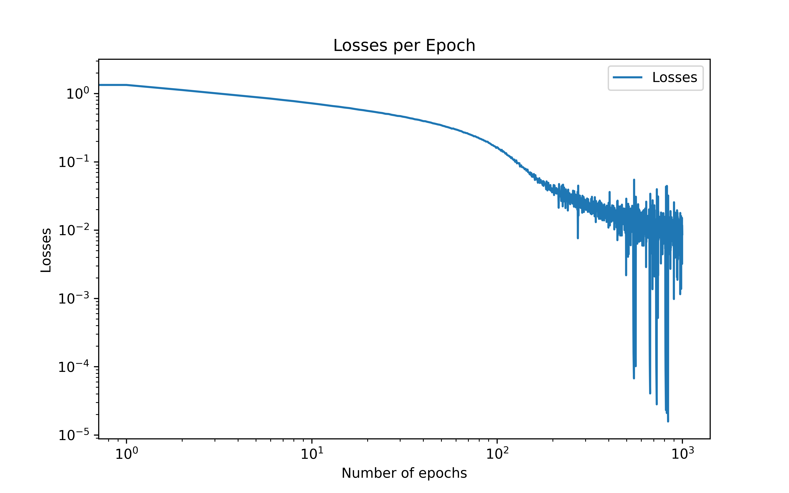
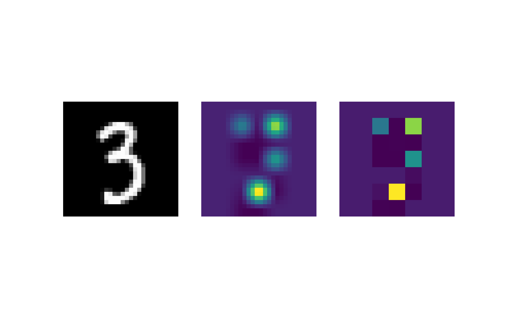

Vision Transformer
Theoretical Background
What is the meaning of all appearing quantities and how are they used in the attention mechanism?
Q = represents the query input vector used to compute the query, by multiplying the query input vector with the query weight matrix \(W^Q\), we get the query matrix.The query can be seen as encoding what is being asked of the transformer model to pay attention to. K = represents the key input vector used to compute the key, by multiplying the key input vector with the key weight matrix \(W^K\), we get the key matrix. The key can be seen as encoding the information that the input vector holds or how relevant it is to other queries. V = represents the value input vector used to compute the value, by multiplying the value input vector with the value weight matrix \(W^V\), we get the value matrix. The value can be seen as encoding the information that is being shared if if the key and query are found relevant, i.e the value is being weighted by the similarity of the key and query.
The softmax function is used to normalize the attention weights appropriately. The dot product of the key and the query are scaled by one over the square root of the dimension of the key and query vectors. This is done because the the gradients of the softmax function become exponentially small for inputs of high magnitude. The scaling helps with preventing the gradients from diminishing and thus making training more stable.
What is the attention map (also known as attention weights)? What is its dimension? How can we interpret it?
The attention map is the output of the softmax function, that is the scaled dot product of the key and query, normalized by the softmax function. The dimension of the attention map is \(n_{batch} \times * d_seq * d_seq\). We can interpret the attention map as a matrix that encodes the similarity of the key and query vectors. The attention map is used to weight the value vectors.
What is self-attention?
Self-attention refers to a specific type of the attention mechanism that is outline in equation 1. Self-attention refers to the case when we are using the same input sequence to determine the queries, keys, and values. We can write this in relation to equation 1, as the case when \(Q = K = V\) or \[ \textrm{SelfAttention}(X) = \textrm{Attention}(X, X, X), \] where \(X\) is our input sequence.
The attention update in Eq. (1) is sometimes referred to as a fully-connected graph neural network. Why?
In a fully-connected graph neural network every node is connected to every other node. In the case of the attention mechanism, every query is connected to every key. This is because the attention mechanism computes the similarity of every query to every key. This is why the attention mechanism is sometimes referred to as a fully-connected graph neural network.
Implementation
Scaled Dot Product Attention
We implement the ScaledDotProductAttention class that computes the scaled dot product attention. The class is defined as follows:
class ScaledDotProductAttention(torch.nn.Module):
def __init__(self, d_model):
super().__init__()
self.d_model = d_model
self.scale = 1.0 / (d_model**0.5)
# Define linear layers for queries, keys, and values
self.query_linear = nn.Linear(out_features=d_model, in_features=d_model)
self.key_linear = nn.Linear(out_features=d_model, in_features=d_model)
self.value_linear = nn.Linear(out_features=d_model, in_features=d_model)
self.softmax = nn.Softmax(dim=-1)
def forward(self, keys, queries, values):
"""
Args:
keys: tensor of shape (batch_size, d_seq, d_model)
queries: tensor of shape (batch_size, d_seq, d_model)
values: tensor of shape (batch_size, d_seq, d_model)
Returns:
context: tensor of shape (batch_size, d_seq, d_model)
"""
# Project x to query, key, and value
query = self.query_linear(queries) # shape: (batch_size, d_seq, d_model)
key = self.key_linear(keys) # shape: (batch_size, d_seq, d_model)
value = self.value_linear(values) # shape: (batch_size, d_seq, d_model)
# Compute scaled dot product
scaled_dot_product = self.scale * torch.bmm(query, key.transpose(1, 2))
# Compute attention weights
attn_weights = self.softmax(scaled_dot_product)
attention = torch.bmm(attn_weights, value)
return attentionAttention Block
Next we implement the AttentionBlock class that uses the ScaledDotProductAttention class with an additional MLP layer to compute the attention . The class is defined as follows:
class SelfAttentionBlock(nn.Module):
def __init__(self, d_model):
"""
Inputs:
d_model - Feature dimension
"""
super().__init__()
self.self_attention = ScaledDotProductAttention(d_model)
self.mlp = MLP([d_model, d_model, d_model])
def forward(self, x):
attention = self.self_attention(x, x, x)
# Residual attention update
x = x + attention
# Residual MLP update
x = x + self.mlp(x)
return xIn this class we implement residual layers. We use residual layers because this causes the the gradients to be higher which means that the model can make larger updates during training and thus learn faster. This also helps to resolve our issue of vanishing gradients allows training to be more efficient. Residual updates are also very beneficial for enhancing the generalisation of the network, by allowing it combine the processed information from the self-attention layer and the original input data.
Vision Transformer
The vision transformer is implemented as follows:
class VisionTransformer(nn.Module):
def __init__(
self,
d_model,
num_layers,
num_classes,
patch_size,
):
"""
Inputs:
d_model - Dimensionality of the input feature vectors to the Transformer
num_heads - Number of heads to use in the Multi-Head Attention block
num_layers - Number of layers to use in the Transformer
num_classes - Number of classes to predict
patch_size - Number of pixels that the patches have per dimension
"""
super().__init__()
self.patch_size = patch_size
self.linear_in = nn.Linear(patch_size**2, d_model)
self.transformer = nn.Sequential(
*(SelfAttentionBlock(d_model) for _ in range(num_layers))
)
self.linear_out = nn.Linear(d_model, num_classes)
# Class token
self.class_token = nn.Parameter(torch.randn(1, 1, d_model))
def forward(self, x):
# Image to patches
x = image_to_patches(x, self.patch_size)
# Embed patches
x = self.linear_in(x) # x.shape ---> n_samples, n_patches, d_model
n_samples, _, _ = x.shape
# Concatenate the class token with the patch features
cls_token = self.class_token.repeat(n_samples, 1, 1)
x = torch.cat(
[cls_token, x], dim=1
) # x.shape ---> (n_samples,n_patches+1, d_model)
# Transformer update
x = self.transformer(x)
# Perform classification prediction
class_features = x[:, 0, :]
class_prediction = self.linear_out(class_features)
return class_predictionTraining
Fitting
We then fit the model to our mnist data set. I noticed that the training set only included 1000 images out of the 60000 images so I changed the splitting of the data such that training set included 40000 images. The losses per epoch are shown below:

We can see that the model tends to converge after about 200 epochs. After 1000 epochs the model achieves a classification accuracy of 94.61 %.
Attention Map
Finally we compute the attention map for a random image in the data set and visualize it. The attention map is shown below: 